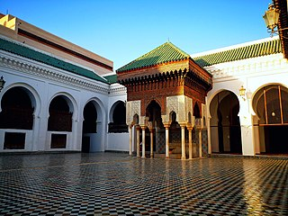

Fes
Fes
cultural capital

Fez or Fes (/fɛz/; Arabic: فاس, romanized: fās, Berber languages: ⴼⴰⵙ, romanized: fas, French: Fès) is a city in northern inland Morocco and the capital of the Fès-Meknès administrative region. It is the third largest city in Morocco, with a population of 1.15 million according to the 2014 census.[4] Located to the northeast of the Atlas Mountains, Fez is linked to several important cities of different regions; it is 206 km (128 mi) from Tangier to the northwest, 246 km (153 mi) from Casablanca, 189 km (117 mi) from Rabat to the west. The Trans-Saharan trade route may be accessed via Marrakesh, 387 km (240 mi) to the southwest of Fez. It is surrounded by hills and the old city is centered around the Fez River (Oued Fes) flowing from west to east.
Fez was founded under Idrisid rule during the 8th-9th centuries CE. It initially consisted of two autonomous and competing settlements. Successive waves of mainly Arab immigrants from Ifriqiya (Tunisia) and al-Andalus (Spain/Portugal) in the early 9th century gave the nascent city its Arab character. After the downfall of the Idrisid dynasty, other empires came and went until the 11th century when the Almoravid Sultan Yusuf ibn Tashfin united the two settlements into what is today's Fes el-Bali quarter. Under Almoravid rule, the city gained a reputation for religious scholarship and mercantile activity.
Fez reached its zenith in the Marinid era (13th-15th centuries), regaining its status as political capital. Numerous new madrasas and mosques were constructed, many of which survive today, while other structures were restored. These buildings are counted among the hallmarks of Moorish and Moroccan architectural styles. In 1276 the Marinid sultan Abu Yusuf Yaqub also founded the royal administrative district of Fes Jdid, where the Royal Palace (Dar al-Makhzen) is still located today, to which extensive gardens were later added. During this period the Jewish population of the city grew and the Mellah (Jewish quarter) was formed on the south side of this new district. After the overthrow of the Marinid dynasty, Fez declined and subsequently competed with Marrakesh for political and cultural influence. It became the capital again under the 'Alawi (Alaouite) dynasty up until 1912.
Today, the city consists of two old medina quarters, Fes el-Bali and Fes Jdid, and the much larger modern urban Ville Nouvelle area founded during the French colonial era. The medina of Fez is listed as a World Heritage Site and is believed to be one of the world's largest urban pedestrian zones (car-free areas).[5] It has the University of Al-Qarawiyyin which was founded in 857 and is considered by some to be the oldest continuously functioning institute of higher education in the world. It also has Chouara Tannery from the 11th century, one of the oldest tanneries in the world. The city has been called the "Mecca of the West" and the "Athens of Africa." It is also considered the spiritual and cultural capital of Morocco.
Reservé